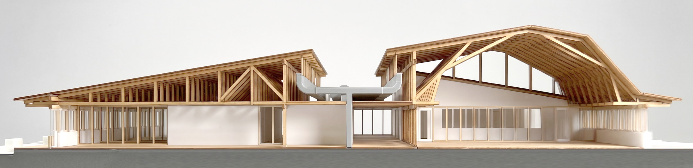
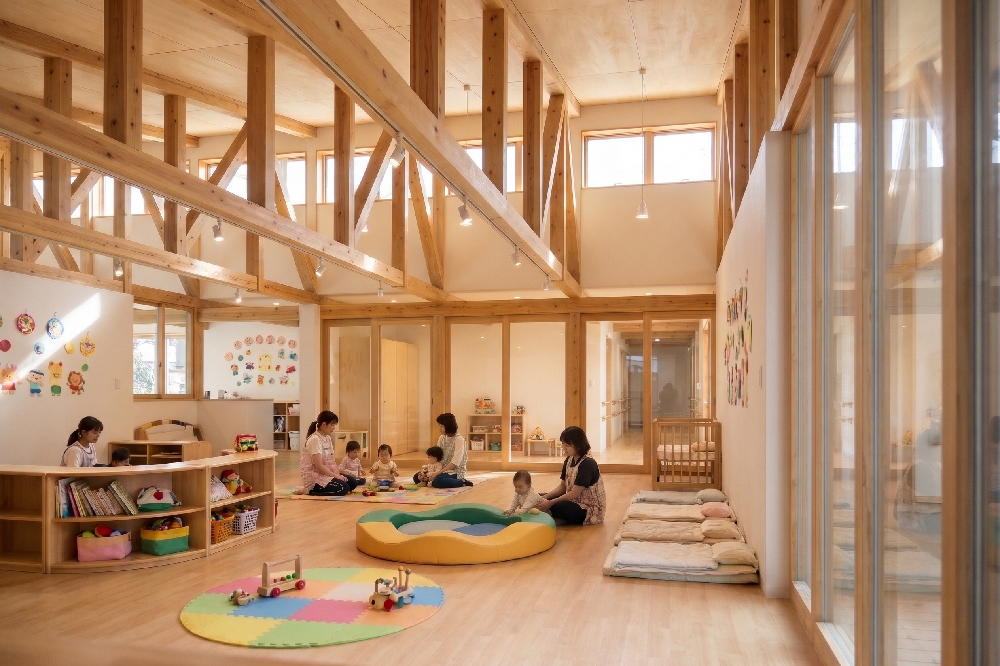
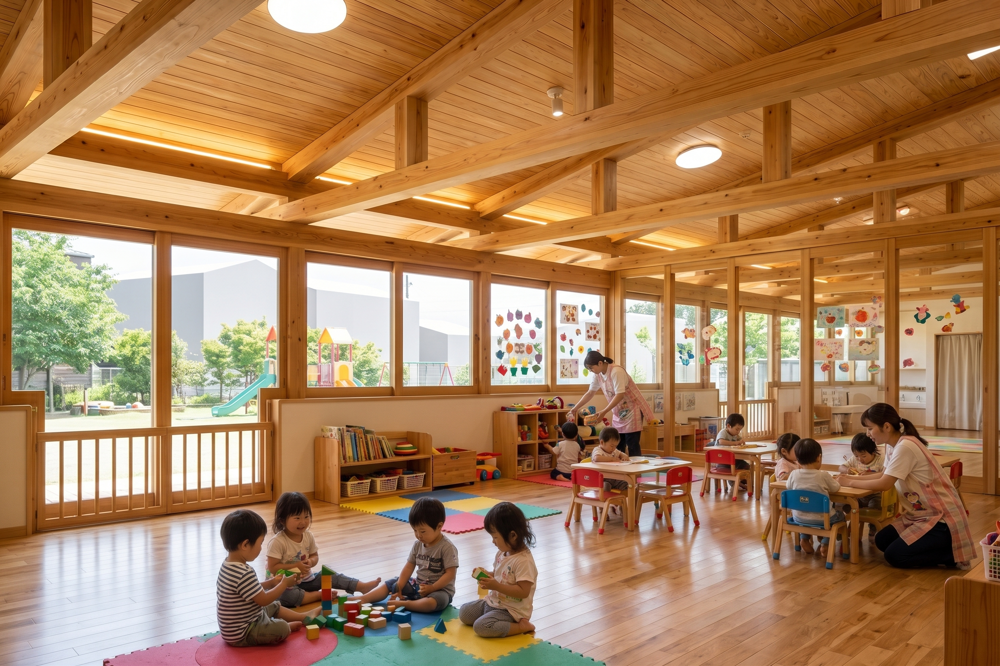
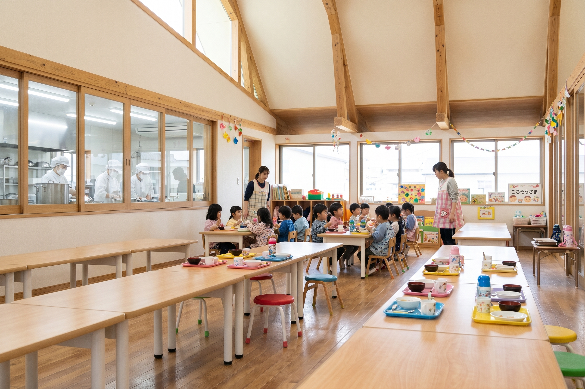
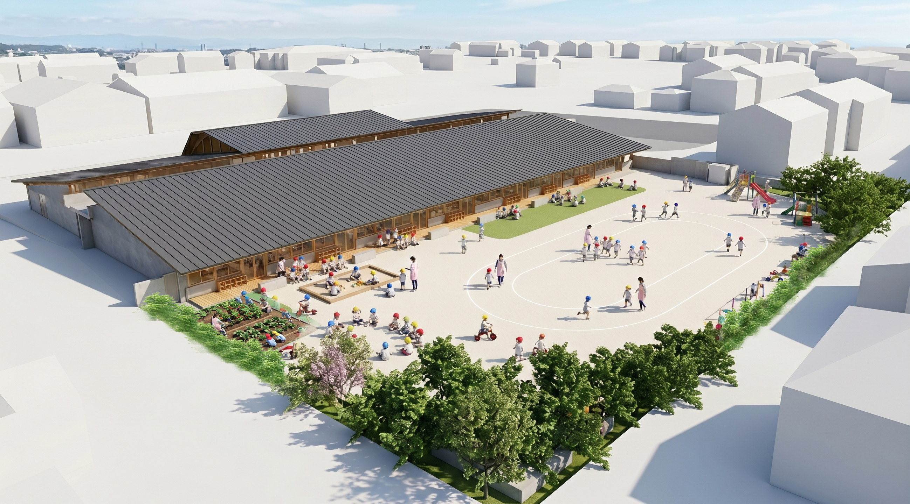

小布施の保育園
長野県小布施町における保育園の計画。
豊かな自然が残る地方都市において、周囲のおおらかな環境と連続するような平屋の園舎を設計しました。
内部は木造トラスやアーチ状の梁、放射状の木架構に覆われ、それぞれの居場所に豊かな表情を与えながら、平屋であることを活かし、どこにいても光があふれる保育環境を作り出しています。
あたたかな木の骨格とたっぷりの陽光に包まれながら、子どもたちが日々のびのびと健やかに育つ空間を目指しています。








